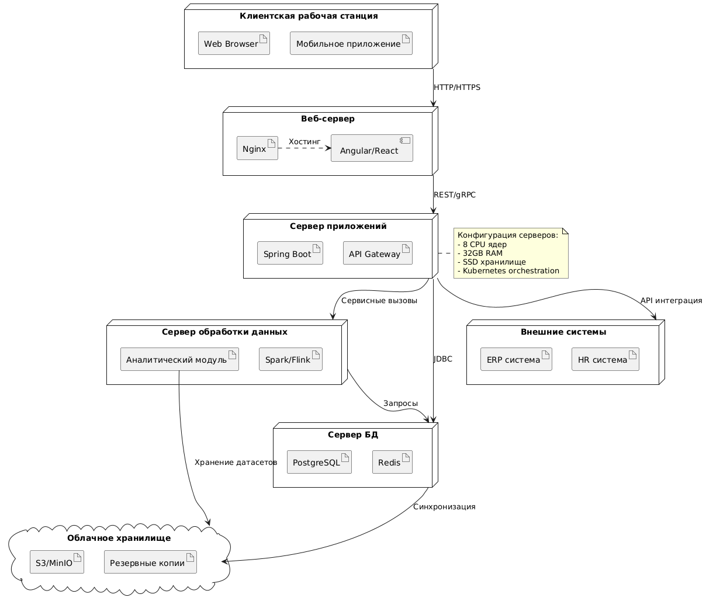

Информационная система для анализа больших данных - это программное обеспечение, предназначенное для обработки, хранения и анализа больших объёмов данных. Она позволяет пользователям извлекать полезную информацию, выявлять тренды и принимать решения на основе анализа. Система включает в себя разнообразные инструменты для визуализации и алгоритмы для анализа данных, что делает её очень полезным инструментом для специалистов, работающих с данными.
Цель проекта - создание удобного и мощного инструмента для анализа данных.
Задачи: разработка интерфейса, интеграция алгоритмов анализа, обеспечение безопасности данных.
4P
Product
Система предназначена для обработки, хранения и анализа больших объёмов данных. Она позволяет пользователям извлекать полезную информацию, выявлять тренды и принимать решения на основе анализа.
Ключевые функции:
Поддержка различных форматов данных
Инструменты для визуализации данных
Возможности для интеграции с другими системами (API)
Promotion
Использование рекламы (Google Ads)
Обучающие разделы на платформе
Price
Различные уровни подписки (базовый, стандартный, премиум)
Пробный период премиум-подписки
Place
Онлайн-платформа
SWOT-анализ
S (сильные стороны)
Мощные аналитические возможности
Адаптивный дизайн
Простой и понятный интерфейс
Безопасность данных
W (слабые стороны)
Необходимость в обучении
Зависимость от качества данных
O (возможности)
Рост рынка анализа данных - востребованность
Сотрудничество с другими компаниями
Выход на рынки других стран
T (внешние угрозы)
Большая конкуренция
Необходимость в постоянном обновлении системы и имплементации новейших техник
Киберугрозы
Техническое задание
Введение
Цель данного технического задания - определить требования и описать функциональность информационной системы для анализа больших данных. Система предназначена для обработки, хранения и анализа больших объёмов данных, а также для визуализации и интеграции с другими системами.
Общие требования
Название проекта: Информационная система для анализа больших данных
Авторы: Александр Аскеров, Артём Гисматуллин
Целевая аудитория: Специалисты, работающие с данными
Сроки: Завершить до 01.06.2025
Основные функции:
Поддержка различных форматов данных
Инструменты для визуализации данных
Возможности для интеграции с другими системами (API)
Документация, обучающие материалы
Функциональные требования
Обработка данных
Система должна поддерживать загрузку и обработку данных в различных форматах (CSV, JSON, XML и т.д.)
Реализация алгоритмов для анализа данных, включая статистический анализ, машинное обучение и другие методы
Хранение данных
Использование надёжных и масштабируемых решений для хранения больших объёмов данных
Обеспечение безопасности данных и защиты от несанкционированного доступа
Визуализация данных
Разработка инструментов для создания графиков, диаграмм и других визуализаций
Поддержка интерактивных элементов для улучшения пользовательского опыта
Интеграция
Предоставление API для интеграции с другими системами и сервисами
Возможность экспорта данных и результатов анализа в различные форматы
Управление пользователями
Реализация системы аутентификации и авторизации (администратор, гость)
Возможность настройки персональных профилей и предпочтений (темы, шаблоны отчётов)
Автоматизация и отчётность
Функция планирования регулярных задач анализа данных
Генерация автоматизированных отчетов в форматах PDF, Excel, HTML
Расширенный анализ
Поддержка потоковой обработки данных в реальном времени
Интеграция предобученных моделей машинного обучения для прогнозирования
Совместная работа
Возможность комментирования и совместного редактирования визуализаций
Общий доступ к дэшбордам через ссылки или встроенные виджеты
Нефункциональные требования
Производительность
Система должна обрабатывать большие объёмы данных с высокой скоростью
Обеспечение минимальных временных задержек при выполнении аналитических задач
Безопасность
Реализация мер по защите данных, включая шифрование и контроль доступа
Защита от киберугроз и атак
Масштабируемость
Возможность горизонтального и вертикального масштабирования для поддержки увеличения объёма данных и пользователей
Удобство использования
Разработка простого и интуитивно понятного интерфейса
Обучающие разделы и документация для пользователей
Совместимость
Поддержка работы в современных браузерах (Chrome, Firefox, Safari, Edge) и на основных ОС (Windows, macOS, Linux)
Адаптивный интерфейс для мобильных устройств и планшетов
Надёжность
Реализация механизмов резервного копирования данных и восстановления после сбоев
Документация и поддержка
Полная техническая документация для разработчиков (API, архитектура)
Наличие службы технической поддержки с реакцией на запросы в течение 24 часов
Тестирование
Проведение нагрузочного тестирования для проверки производительности при пиковых запросах
Требуемая для проекта стоимость и ресурсы
Для реализации проекта потребуются следующие ресурсы:
Сотрудники:
Проектный менеджер
Аналитик данных
Разработчики (фронтенд, бэкенд)
Тестировщики
Дизайнеры UX/UI
Денежные затраты:
Зарплаты сотрудников
Лицензии на ПО
Хостинг и инфраструктура
Маркетинг и продвижение
Стек технологий:
Языки программирования: Python, JavaScript
Фреймворки: Django, React
Базы данных: PostgreSQL, MongoDB
Инструменты: Docker, Kubernetes
Диаграммы
Диаграмма классов
Диаграмма классов
Диаграмма компонентов
Диаграмма компонентов
Диаграмма развёртывания
Диаграмма развёртывания

2. Разработка
Как разрабатывалась наша система
Разработка системы началась с анализа требований и создания технического задания. Далее была сформирована команда разработчиков, которая начала работу над архитектурой системы. На этапе разработки использовались современные методологии, такие как Agile и Scrum, для обеспечения гибкости и быстрого реагирования на изменения.
Диаграммы
Диаграмма композитной структуры
Диаграмма композитной структуры
Диаграмма объектов
Диаграмма объектов
Диаграмма пакетов
Диаграмма пакетов
3. Тестирование
Графики востребованности функционала
Ниже представлены графики, показывающие, какой функционал был востребован и нужен в выборке тестирующих пользователей.
График 1: Востребованность основных функций
График, показывающий высокую востребованность основных функций системы.
График 2: Востребованность дополнительных функций
График, показывающий низкую востребованность дополнительных функций системы.
Диаграммы
Временна́я диаграмма
Временна́я диаграмма
Диаграмма обзора взаимодействия
Диаграмма обзора взаимодействия
4. Внедрение
Выводы, что получилось
В результате внедрения системы были достигнуты следующие результаты:
Успешная интеграция с внешними системами
Улучшение производительности и стабильности работы